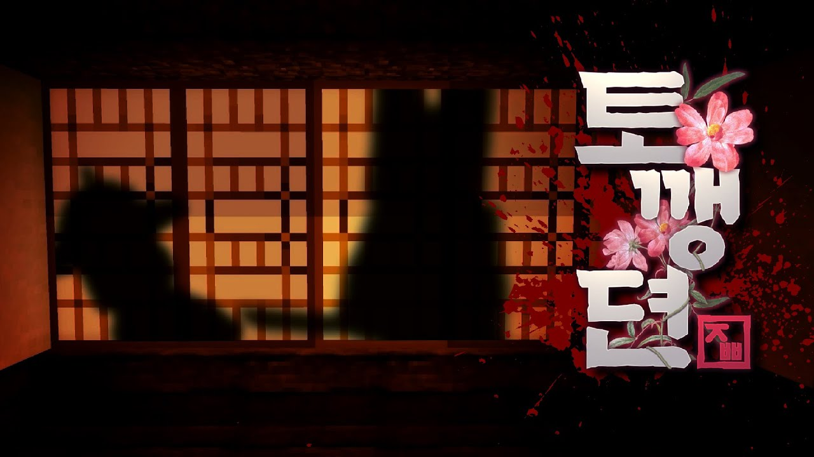
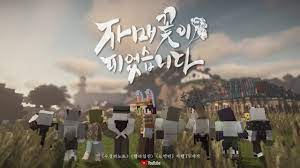

Woojeong-ri Note
returns to Ujeong-ri, the village where his grandmother lived in her lifetime.
Toggengdian

During a time travel, Kim Jappap, who crash-landed at Dohwagol in the Joseon Dynasty,is designated as a suspect in the murder of Jangho, who was Dohwagol's sato,
and Kim Jappap travels to Dohwagol to prove her innocence. Among the residents of Dohwagol,
she weighs the hearts of the residents and various evidences to find out the truth of the case
as to whether they should or should not believe.
Sister Flower Bloom

Detective "Jappap Kim" who became aware of the PPP group in the Budeok-ri caseone day received a package with a sticker saying "Cut off the shoots" and,
according to the instructions of the contents of the package,
went to "Sister Island", the home of the PPP group in the 90s.
Thieves of FrostDesert

infiltrates YJK as a prisoner and struggles to steal the Heart of the Desert.